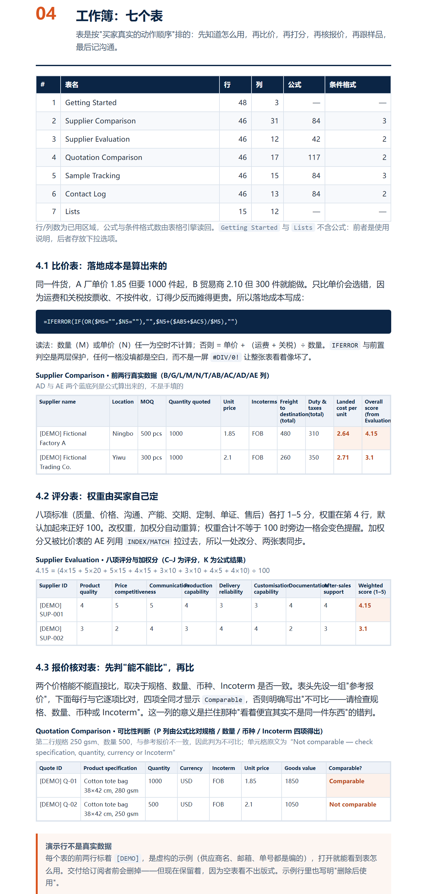
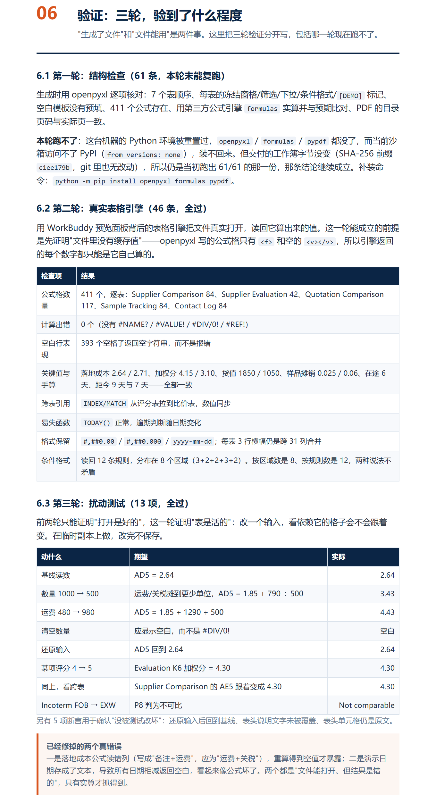

给外部审查用。报告正文在前，四份资料 PDF 原样附在后面，合并成一个文件，便于一次读完或整份上传。
先看这一页。如果你只想判断"这批东西能不能用"，看完这 8 行就够了。
| 交付了什么 | 2 个订阅资料文件：一份供应比价工作簿（35.3 KiB）、一份中英术语手册（1439.3 KiB，25 页） |
| 工作簿结构 | 7 个表、411 个公式格、12 条条件格式规则 |
| 术语手册内容 | 7 类、107 个词条、40 个整句 |
| 验证做了几轮 | 三轮：结构检查 61 条（本轮未能复跑）→ 表格引擎 46 条 → 扰动测试 13 项（含在 46 条内） |
| 最关键的一条证据 | 文件里所有公式格只有公式、没有缓存值；引擎打开后算出的数字与手算一致，改输入后数字会跟着变 |
| 必须澄清 | 验证用的是腾讯文档表格引擎，不是 WPS，也不是 Excel；后两者本机都没验成（原因见第六节） |
| 还没解决 | 域名未定（canonical/sitemap 仍是 .example）、未部署、没有 Email 系统，所以这两份资料还不能发给订阅者 |
| 下一步依赖 | 先把域名和发信通道定下来，再写订阅系统；否则欢迎邮件里的链接只能指向 localhost |
这份报告怎么读
第二、三节讲东西本身是什么；第四节讲怎么验的、验到了什么程度；第五节把"没做到的部分"单独列出来，不混在结论里；第六节是必须澄清的三件事。附录 A 是合并本里每份资料的起止页，方便直接跳转。
页码指本报告内部；合并本里四份资料的起始页见附录 A。
下面是工作簿与验证结果的实拍。表格里的数字是从文件里读出来的真实内容，不是示意。


两个文件，一份给"比价"，一份给"看懂对方在说什么"。
| 文件 | 给谁用 | 规模 | 放在哪 |
|---|---|---|---|
供应商比价工作簿.xlsx | 买家自己填，下载后在本地表格软件里用 | 7 表 / 411 公式 / 35.3 KiB | resources/subscriber/ |
中英术语手册.pdf | 看不懂报价单和微信消息时查 | 107 词 + 40 句 / 25 页 / 1439.3 KiB | resources/subscriber/ |
网站上的 public/downloads/ 是公开下载目录，任何人拿到网址就能下。这两份东西的设计前提是"用邮箱换资料"，如果丢进公开目录，等于把订阅的门槛直接拆掉，也和首页唯一的邮箱入口自相矛盾。所以它们放在 resources/subscriber/，不进构建产物（dist/），只有确定交付方式之后才挪。
这条不是技术限制，是产品决定。如果以后决定"订阅资料也免费公开"，把它们移进 public/downloads/ 并跑一次 npm run generate:* 即可，页面上的下载区已经在那里了。
市面上搜"supplier comparison template"，出来的多是空表格：一堆列，没有公式，填进去也不会告诉你任何结论。这份东西的差别在于三件事都算出来了：落地成本（把运费和关税摊进单价）、加权评分（八项标准按你自己设的权重合成一个分）、可比性判断（规格、数量、币种、Incoterm 四项不完全一致就明确告诉你"不可比"）。第二个人拿到这张表，不用问填表人就能看出为什么选了 A 没选 B。
表是按"买家真实的动作顺序"排的：先知道怎么用，再比价，再打分，再核报价，再跟样品，最后记沟通。
| # | 表名 | 行 | 列 | 公式 | 条件格式 |
|---|---|---|---|---|---|
| 1 | Getting Started | 48 | 3 | — | — |
| 2 | Supplier Comparison | 46 | 31 | 84 | 3 |
| 3 | Supplier Evaluation | 46 | 12 | 42 | 2 |
| 4 | Quotation Comparison | 46 | 17 | 117 | 2 |
| 5 | Sample Tracking | 46 | 15 | 84 | 3 |
| 6 | Contact Log | 46 | 13 | 84 | 2 |
| 7 | Lists | 15 | 12 | — | — |
行/列数为已用区域，公式与条件格式数由表格引擎读回。Getting Started 与 Lists 不含公式：前者是使用说明，后者存放下拉选项。
同一件货，A 厂单价 1.85 但要 1000 件起，B 贸易商 2.10 但 300 件就能做。只比单价会选错，因为运费和关税按票收、不按件收，订得少反而摊得更贵。所以落地成本写成：
=IFERROR(IF(OR($M5="",$N5=""),"",$N5+($AB5+$AC5)/$M5),"")
读法：数量（M）或单价（N）任一为空时不计算；否则 = 单价 + （运费 + 关税）÷ 数量。IFERROR 与前置判空是两层保护，任何一格没填都是空白，而不是一屏 #DIV/0! 让整张表看着像坏了。
| Supplier name | Location | MOQ | Quantity quoted | Unit price | Incoterms | Freight to destination (total) | Duty & taxes (total) | Landed cost per unit | Overall score (from Evaluation) |
|---|---|---|---|---|---|---|---|---|---|
| [DEMO] Fictional Factory A | Ningbo | 500 pcs | 1000 | 1.85 | FOB | 480 | 310 | 2.64 | 4.15 |
| [DEMO] Fictional Trading Co. | Yiwu | 300 pcs | 1000 | 2.1 | FOB | 260 | 350 | 2.71 | 3.1 |
八项标准（质量、价格、沟通、产能、交期、定制、单证、售后）各打 1–5 分，权重在第 4 行，默认加起来正好 100。改权重，加权分自动重算；权重合计不等于 100 时旁边一格会变色提醒。加权分又被比价表的 AE 列用 INDEX/MATCH 拉过去，所以一处改分、两张表同步。
| Supplier ID | Product quality | Price competitiveness | Communication | Production capability | Delivery reliability | Customisation capability | Documentation | After-sales support | Weighted score (1–5) |
|---|---|---|---|---|---|---|---|---|---|
| [DEMO] SUP-001 | 4 | 5 | 5 | 4 | 3 | 3 | 4 | 4 | 4.15 |
| [DEMO] SUP-002 | 3 | 2 | 4 | 3 | 4 | 4 | 2 | 3 | 3.1 |
两个价格能不能直接比，取决于规格、数量、币种、Incoterm 是否一致。表头先设一组"参考报价"，下面每行与它逐项比对，四项全同才显示 Comparable，否则明确写出"不可比——请检查规格、数量、币种或 Incoterm"。这一列的意义是拦住那种"看着便宜其实不是同一件东西"的错判。
| Quote ID | Product specification | Quantity | Currency | Incoterm | Unit price | Goods value | Comparable? |
|---|---|---|---|---|---|---|---|
| [DEMO] Q-01 | Cotton tote bag 38×42 cm, 280 gsm | 1000 | USD | FOB | 1.85 | 1850 | Comparable |
| [DEMO] Q-02 | Cotton tote bag 38×42 cm, 250 gsm | 500 | USD | FOB | 2.1 | 1050 | Not comparable |
演示行不是真实数据
每个表的前两行标着 [DEMO]，是虚构的示例（供应商名、邮箱、单号都是编的），打开就能看到表怎么用。交付给订阅者前会删掉——但现在保留着，因为空表看不出版式。示例行里也写明"删除后使用"。
7 类共 107 个词条，另有 40 个整句，25 页 A4。
目的不是教中文，是让不读中文的买家在报价单、微信消息、工厂会议上认出那个词，并且知道它牵扯到钱还是牵扯到责任。每个词条四列：英文、中文原文、白话解释、以及一句中文备注（方便对方确认）。Incoterms 按"风险在哪里转移"描述，并注明依据 ICC Incoterms 2020，不写成法律条文。
| # | 类别 | 解决什么场景 |
|---|---|---|
| 1 | 供应商类型 | 工厂、贸易商、代理分别意味着什么，怎么问出来 |
| 2 | 价格与订单 | MOQ、阶梯价、含税不含税、打样费 |
| 3 | 产品质量 | 验货、AQL、认证与检测报告的区别 |
| 4 | 运输与物流 | 整柜拼柜、体积重、起运港目的港 |
| 5 | 贸易条款 | Incoterms 各条的风险转移点 |
| 6 | 付款与谈判 | 定金比例、见提单副本、账期 |
| 7 | 工厂拜访 | 约厂、进门、看线、要资料 |
| 8 | 整句 | 40 句可以直接发给对方的说法 |
| English | 中文 | 说明 |
|---|---|---|
| MOQ | 起订量 / 最小起订量 | Minimum order quantity — the smallest number the supplier will produce. Usually quoted per model and per colour, which can be two different figures. e.g. "What is the MOQ per colour?" |
| Unit price | 单价 | Price for one piece. Meaningless without the quantity, currency, Incoterm and specification it applies to. e.g. "What is the unit price at 5,000 pieces, FOB Ningbo?" |
| Wholesale price | 批发价 | Price for buyers who resell, usually in stock and in smaller lots than a factory order. e.g. "Is this the wholesale price for one carton?" |
整本手册原文见合并本最后 25 页（附录 A 有起始页）。
"生成了文件"和"文件能用"是两件事。这里把三轮验证分开写，包括哪一轮现在跑不了。
生成时用 openpyxl 逐项核对：7 个表顺序、每表的冻结窗格/筛选/下拉/条件格式/[DEMO] 标记、空白模板没有预填、411 个公式存在、用第三方公式引擎 formulas 实算并与预期比对、PDF 的目录页码与实际页一致。
本轮跑不了：这台机器的 Python 环境被重置过，openpyxl / formulas / pypdf 都没了，而当前沙箱访问不了 PyPI（from versions: none），装不回来。但交付的工作簿字节没变（SHA-256 前缀 c1ee179b，git 里也无改动），所以仍是当初跑出 61/61 的那一份，那条结论继续成立。补装命令：python -m pip install openpyxl formulas pypdf。
用 WorkBuddy 预览面板背后的表格引擎把文件真实打开，读回它算出来的值。这一轮能成立的前提是先证明"文件里没有缓存值"——openpyxl 写的公式格只有 <f> 和空的 <v></v>，所以引擎返回的每个数字都只能是它自己算的。
| 检查项 | 结果 |
|---|---|
| 公式格数量 | 411 个，逐表：Supplier Comparison 84、Supplier Evaluation 42、Quotation Comparison 117、Sample Tracking 84、Contact Log 84 |
| 计算出错 | 0 个（没有 #NAME? / #VALUE! / #DIV/0! / #REF!） |
| 空白行表现 | 393 个空格子返回空字符串，而不是报错 |
| 关键值与手算 | 落地成本 2.64 / 2.71、加权分 4.15 / 3.10、货值 1850 / 1050、样品摊销 0.025 / 0.06、在途 6 天、距今 9 天与 7 天——全部一致 |
| 跨表引用 | INDEX/MATCH 从评分表拉到比价表，数值同步 |
| 易失函数 | TODAY() 正常，逾期判断随日期变化 |
| 格式保留 | #,##0.00 / #,##0.000 / yyyy-mm-dd；每表 3 行横幅仍是跨 31 列合并 |
| 条件格式 | 读回 12 条规则，分布在 8 个区域（3+2+2+3+2）。按区域数是 8、按规则数是 12，两种说法不矛盾 |
前两轮只能证明"打开是好的"，这一轮证明"表是活的"：改一个输入，看依赖它的格子会不会跟着变。在临时副本上做，改完不保存。
| 动什么 | 期望 | 实际 |
|---|---|---|
| 基线读数 | AD5 = 2.64 | 2.64 |
| 数量 1000 → 500 | 运费/关税摊到更少单位，AD5 = 1.85 + 790 ÷ 500 | 3.43 |
| 运费 480 → 980 | AD5 = 1.85 + 1290 ÷ 500 | 4.43 |
| 清空数量 | 应显示空白，而不是 #DIV/0! | 空白 |
| 还原输入 | AD5 回到 2.64 | 2.64 |
| 某项评分 4 → 5 | Evaluation K6 加权分 = 4.30 | 4.30 |
| 同上，看跨表 | Supplier Comparison 的 AE5 跟着变成 4.30 | 4.30 |
| Incoterm FOB → EXW | P8 判为不可比 | Not comparable |
另有 5 项断言用于确认"没被测试改坏"：还原输入后回到基线、表头说明文字未被覆盖、表头单元格仍是原文。
已经修掉的两个真错误
一是落地成本公式读错列（写成"备注+运费"，应为"运费+关税"），重算得到空值才暴露；二是演示日期存成了文本，导致所有日期相减返回空白，看起来像公式坏了。两个都是"文件能打开、但结果是错的"，只有实算才抓得到。
这三条都会影响你怎么看待上面的结论，所以单独列出来，不放在脚注里。
驱动它的是 @tencent/tencent-docs-ai-engine 的 editor_sdk.exe，也就是这个应用预览面板背后的引擎。之所以能得出"公式是活的"这个结论，靠的是三条与引擎归属无关的证据：文件里没有缓存值、引擎算出的数等于手算、改输入数字会变。但"能在 WPS 里打开""能在 Excel 里打开"这两句话，不能用这次结果代替。
本机确实装着 WPS（D:\下载\WPS Office\12.1.0.29690，进程在跑）。程序化驱动它的唯一方式是 COM（Ket.Application），而沙箱安全策略直接拦截了 COM 实例化：COM object instantiation can run arbitrary code。按规则不能绕过，所以这一环改由人工确认——把 M5 的数量从 1000 改成 500，AD5 应从 2.64 变成 3.43，会变就说明表在 WPS 里是活的。
公式只用了 IFERROR / SUMPRODUCT / INDEX / MATCH / COUNTA / TODAY / SUM，都是 Excel 2007 起就有的函数，没有动态数组、没有 LAMBDA、没有 VBA、没有宏、没有 Power Query。理论上无兼容风险，但"我在 Excel 里打开过"这句话，现在不能说。
分成两类：真正卡住上线的，和不影响使用但该做的。
| 问题 | 为什么卡 | 需要你做什么 |
|---|---|---|
| 域名未定 | canonical、sitemap、og:url 仍是 .example；订阅欢迎邮件里的链接只能指向 localhost | 决定域名并授权我改 src/config/site.ts |
| 没有发信通道 | 没有 SMTP / 事务邮件服务，订阅确认信发不出去，两份资料没法交付 | 选一家服务并授权接入（或先用表单收集，手动发） |
| 未部署 | 所有验证都在本机；线上 404、缓存、下载行为都没验过 | 域名定后部署一次，再跑线上检查 |
check:subscriber 与 generate:xlsx 都跑不了。本报告后面的内容是四份资料 PDF 原文，未做任何改动。
| 部分 | 页码 | 页数 |
|---|---|---|
| 本报告（阶段报告正文） | P1–P13 | 13 |
| Canton Fair 基础清单 | P14–P26 | 13 |
| 义乌市场基础指南 | P27–P38 | 12 |
| 出行准备清单 | P39–P53 | 15 |
| 中英术语手册（订阅资料） | P54–P78 | 25 |
合并只做页面拼接，不改内容、不重排版，所以每份资料内部的目录页码仍然指向它自己那份文档的页码，而不是合并本的页码。对照关系看上面这张表。
可复跑。输出是 2026-11-19 那次运行的原样摘录。
npm run check:subscriber 61/61 checks passed
npm run check:engine delivered file sha256 = c1ee179ba547fab0… reading the delivered workbook through its already-open instance (no copy made) [1] structure 7 sheets, names and order match [2] 411 formula cells, 0 error values [3] 18 computed values match arithmetic done in plain Python [4] number formats, merged banners, 12 conditional-format rules [5] perturbation: inputs move the outputs 46/46 sheet-engine assertions passed delivered file byte-identical before and after: yes
npm run check:launch 73/73 checks passed （45 页路由 / 溢出 / 下载完整性 / robots / sitemap / SEO）
本报告由 scripts/report/build-pack.mjs 生成：先读工作簿真实单元格与各文件实际页数，再排版、打印、合并。报告里的数字不可手改，只能重跑。